Above-Ground Biomass (AGB)
1 Background
To calculate Above-ground biomass (AGB) from field inventories, we applied Chave et al. (2014) Eq. 4:
\[AGB = 0.0673 · \Big( WD · H · D^2\Big)^{0.976}\] which relates AGB with Wood Density (\(WD\)), stem Diameter (\(D\) aka \(DBH\)) and Height (\(H\)) of each tree.
2 Wood Density
Wood Density (WD) was retrieved from the global wood density database (Chave et al. 2009, Zanne et al. 2009) using the BIOMASS package in R.
When WD for a species was not found, the mean WD of the genus was allocated. If an individual was not identified to genus, then the mean of the WD of the plot was selected.
##
## species genus plot
## MarVin 20582 19552 9757
## PaiSus 11702 2654 792##
## species genus plot
## 32284 22206 105493 DBH
3.1 sub-plots & min DBH
Plots from Paisagens Sustentáveis have different DBH threshold in their plots. Many of them, measured trees >35cm DBH in the whole plot area and >10cm in a sub-plot area. Sub-plots vary in size across locations, for instance, a 10m x 50m sub-plot within a 50m x 50m plot. Therefore, some expansion factors will be applied when calculating plot AGB.

Sub-plot examples in some Paisagens Sustentáveis plots.
## Minimum DBH in plot and sub-plot (Paisagens Sustentáveis):## owner location year sizeplot minDBH.plot minDBH.subplot area.subplot
## 1 PaiSus ANA_A01 2015 50x50 10 NA <NA>
## 2 PaiSus AND_A01 2013 50x50 35 10 5x50
## 3 PaiSus BON_A01 2014 50x50 35 10 10x50
## 4 PaiSus CAU_A01 2018 50x50 35 10 20x50
## 5 PaiSus DUC_A01 2016 50x50 35 10 20x50
## 6 PaiSus FN_A01 2015 50x50 35 10 5x50
## 7 PaiSus HUM_A01 2014 50x50 35 10 10x50
## 8 PaiSus JAM_A02 2013 50x50 35 10 5x50
## 9 PaiSus JAM_A03 2013 50x50 35 10 5x50
## 10 PaiSus PAR_A01 2018 50x50 35 10 20x50
## 11 PaiSus SAN_A01 2014 50x50 35 10 5x50
## 12 PaiSus SAN_A02 2014 50x50 35 10 5x50
## 13 PaiSus SFX_A01 2011 40x40 10 NA <NA>
## 14 PaiSus TAL_A01 2014 50x50 35 10 10x50
## 15 PaiSus TAP_A01 2015 50x50 10 NA <NA>
## 16 PaiSus TAP_A03 2015 50x50 10 NA <NA>## Min and Max DBH in data (by location):## Min Max
## MarVin EMB_A01 2016 100x100 0.600000 195.5000
## MarVin FEA_A01 2013 50x50 0.100000 163.9000
## MarVin FEA_A02 2015 100x100 9.000000 230.1000
## MarVin FEG_A01 2017 100x100 9.900000 201.9000
## MarVin FEL_A01 2018 100x100 9.800000 163.9000
## MarVin FEM_A01 2017 100x100 9.900000 197.4000
## MarVin SFI_A01 2017 100x100 9.900000 205.3000
## MarVin TKX_A01 2016 100x100 1.336902 170.2958
## PaiSus ANA_A01 2015 50x50 10.000000 142.8000
## PaiSus AND_A01 2013 50x50 10.100000 142.0000
## PaiSus BON_A01 2014 50x50 10.000000 180.0000
## PaiSus CAU_A01 2018 50x50 10.000000 190.0000
## PaiSus DUC_A01 2016 50x50 1.700000 98.8000
## PaiSus FN_A01 2015 50x50 10.000000 117.7000
## PaiSus HUM_A01 2014 50x50 10.100000 135.0000
## PaiSus JAM_A02 2013 50x50 10.000000 140.0000
## PaiSus JAM_A03 2013 50x50 10.500000 106.2000
## PaiSus PAR_A01 2018 50x50 4.000000 121.0000
## PaiSus SAN_A01 2014 50x50 10.000000 130.2000
## PaiSus SAN_A02 2014 50x50 10.800000 90.0000
## PaiSus SFX_A01 2011 40x40 10.000000 130.0000
## PaiSus TAL_A01 2014 50x50 10.200000 132.0000
## PaiSus TAP_A01 2015 50x50 10.000000 145.0000
## PaiSus TAP_A03 2015 50x50 9.400000 234.0000There are few DBHs below 10 cm in PaiSus which I consider them as typing errors. I thought I could assign the mean DBH value of the species but I ended up not changing anything for the moment.
Minimum DBH in MarVin data is not fully consistent. Also, there are few points below 5cm which I guess are typos. Many plots seem to start from 10 cm, and some others from 5 cm? See below… NOTE: I need to get proper metadata from him.
## Individuals by DBH class and project##
## [0,5) [5,10) [10,35) [35,Inf)
## MarVin 19 914 43058 5900
## PaiSus 3 1 11777 33673.2 DBH distribution
This is the distribution of DBH in our data:
All inventories
PaiSus
MarVin
4 Height
Height values are few among inventories (3147 out of 61892). Only PaiSus has height values, whereas MarVin has none.
## Individuals with height data by project owners##
## TRUE FALSE
## MarVin 0 49891
## PaiSus 3147 12001## Individuals with height data by locations##
## TRUE FALSE
## MarVin EMB_A01 0 2185
## MarVin FEA_A01 0 6358
## MarVin FEA_A02 0 3407
## MarVin FEG_A01 0 10220
## MarVin FEL_A01 0 7864
## MarVin FEM_A01 0 7995
## MarVin SFI_A01 0 7657
## MarVin TKX_A01 0 4205
## PaiSus ANA_A01 240 3372
## PaiSus AND_A01 337 3
## PaiSus BON_A01 253 0
## PaiSus CAU_A01 0 4154
## PaiSus DUC_A01 0 1079
## PaiSus FN_A01 545 3
## PaiSus HUM_A01 241 0
## PaiSus JAM_A02 0 368
## PaiSus JAM_A03 0 91
## PaiSus PAR_A01 199 1208
## PaiSus SAN_A01 162 1
## PaiSus SAN_A02 154 0
## PaiSus SFX_A01 86 497
## PaiSus TAL_A01 119 1
## PaiSus TAP_A01 248 821
## PaiSus TAP_A03 563 4034.1 Diameter-Height Models
Tree height was estimated by fitting DBH-Height (D-H) models. The relationship between DBH and height is different for trees and palms, so each had its own D-H model (TODO: add palm ref.). There were ~30 crazy D-H data pairs (outliers) which I excluded when building the models (e.g., height = 48.2 m when DBH = 12.7 cm).
Height was predicted for 56374 trees and 5518 palms from D-H models that were fitted using data from 3024 trees and 123 palms:
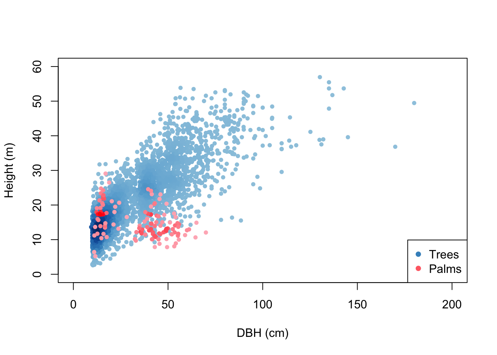
Four D-H models were constucted using the BIOMASS package in R:
| method | equation |
|---|---|
| log1 | \(log(H) = a+ b*log(D)\) |
| log2 | \(log(H) = a+ b*log(D) + c*log(D)^2\) |
| weibull | \(H = a*(1-exp(-(D/b)^c))\) |
| michaelis | \(H = (A * D)/(B + D)\) |
4.2 Model comparison
Best model for trees and palms according to the RSE (and AIC) value was log2:
Trees
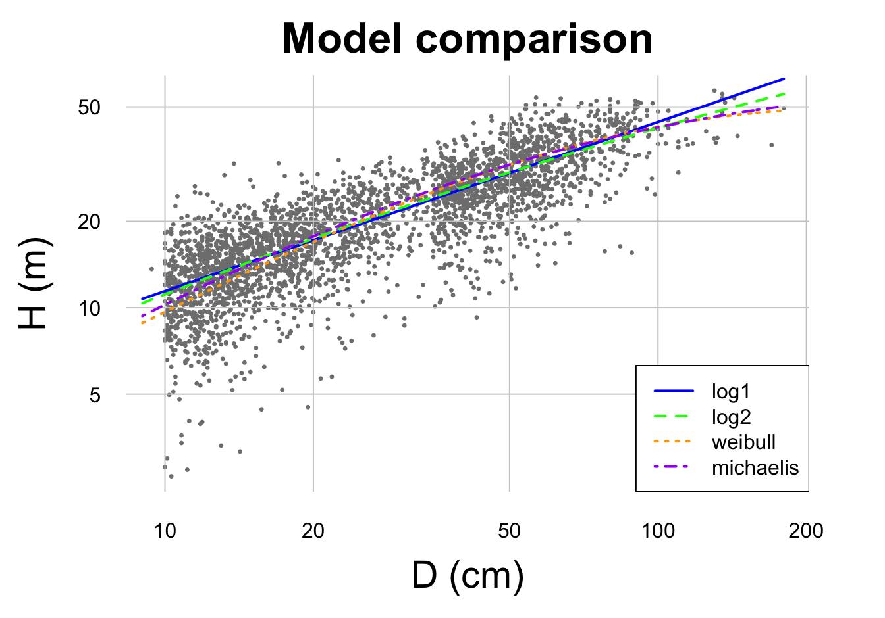
## method color RSE RSElog Average_bias
## 1 log1 blue 5.563502 0.2828035 0.006807462
## 2 log2 green 5.533186 0.2824357 0.005778913
## 3 weibull orange 5.716071 NA 0.014248795
## 4 michaelis purple 5.697336 NA 0.034331636Palms
## method color RSE RSElog Average_bias
## 1 log1 blue 4.328590 0.2932210 0.002015264
## 2 log2 green 4.196784 0.2845017 0.002071325
## 3 weibull orange 4.442285 NA 0.077581455
## 4 michaelis purple 4.779870 NA 0.0782700105 AGB/ACD estimation
We applied Chave et al. (2014) Eq. 4 to estimate AGBind [Mg] for each individual using the BIOMASS package:
\[AGB_{ind} = 0.0673 · \Big( WD · H · D^2\Big)^{0.976}\]
5.1 AGB from D-H models
AGBind was calculated using heights predicted from the four D-H models:
AGB-DBH
log1
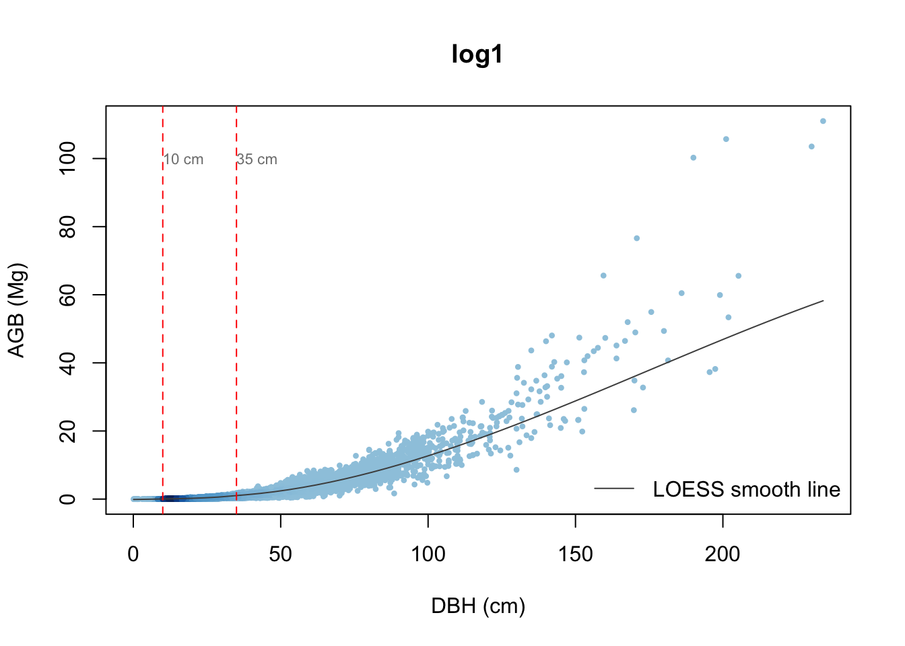
log2
Weibull
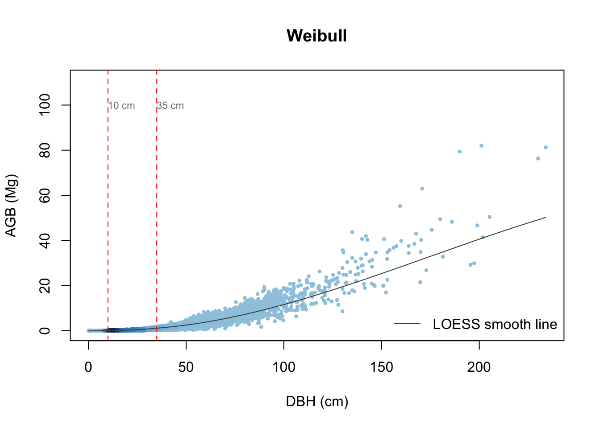
Michaelis
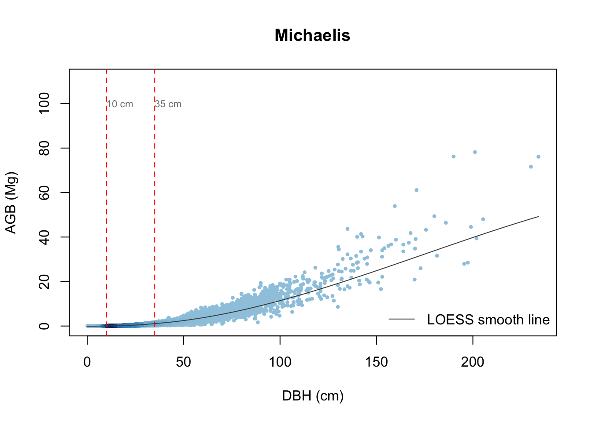
5.1.1 loess

5.2 AGBplot (expansion factor)
AGBplot is the sum of AGBind of all individual in the plot, but it then starts to get tricky here because the minimum DBH in all plots is not the same, so some corrections have to be done. First, we need to define a minimum DBH for all plots to make them comparable between each other. In this case, it will be 10 cm, therefore any individual below that will be excluded from AGBplot calculation. Second, as explained above, some inventories measured trees from 10 cm only in a sub-plot area, so an expansion factor must be applied in those:
\[ AGB_{plot} = \beta_{subplot \space [10,35)} * AGB_{subplot \space [10,35)} + AGB_{ [35,Inf)} \]
\[ \beta_{subplot \space [10,35)} = \frac{area_{plot}}{area_{subplot \space [10,35)}}\]
Further corrections to AGBplot should be made to incorporate biomass from 5 to 10 cm DBH if we are to compare these results with results from Asner & Mascaro (201X) which biomass estimations are for plots from trees measured from 5 cm DBH.
5.3 AGBD & ACD
Above-Ground Biomass Density (AGBD) is biomass per unit of area [Mg/ha]:
\[ AGBD = \frac{AGB_{plot}}{area_{plot}} \]
For defining the area of the plot, we have two options:
using the nominal area of the plot (e.g., 50m x 50m = 0.25ha)
using the area calculated from the polygon shapefile.
I used the nominal area in further calculations.
TODO: add 1:1 plot of both areas
Then, to get Above-ground Carbon Density (ACD), AGBD is multiplied by 0.48 (Martin & Thomas, 2011) which is the carbon content [MgC/ha].
\[ ACD = 0.48 \times \left( \frac{AGB_{plot}}{area_{plot}}\right) = 0.48 \times AGBD \]
5.4 ACD distribution
All inventories
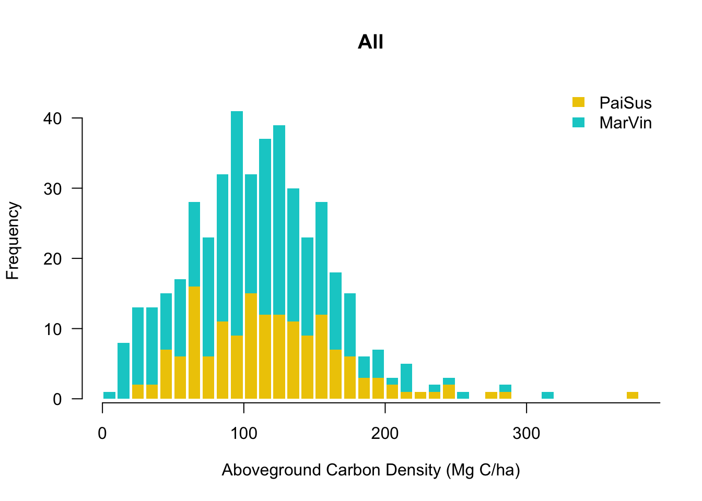
PaiSus
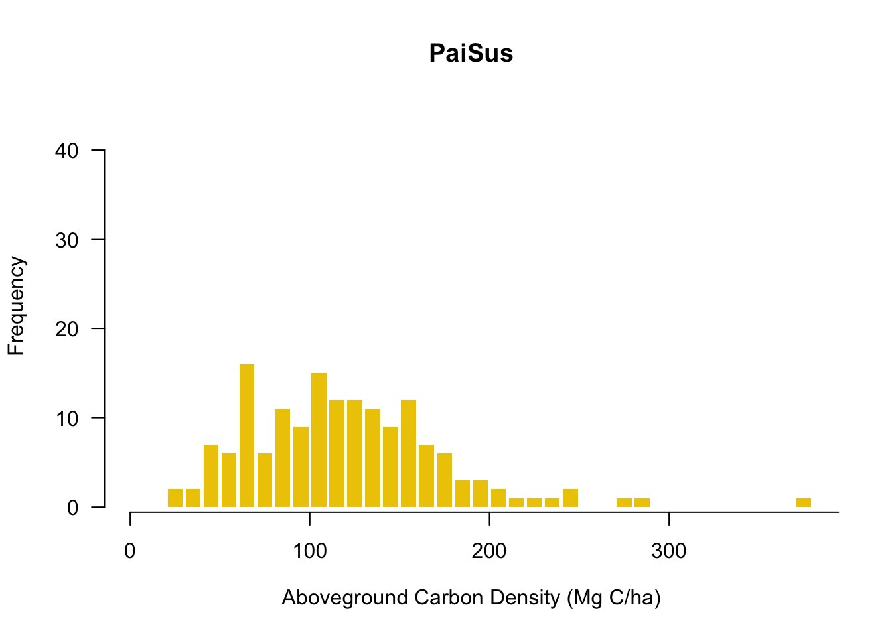
MarVin
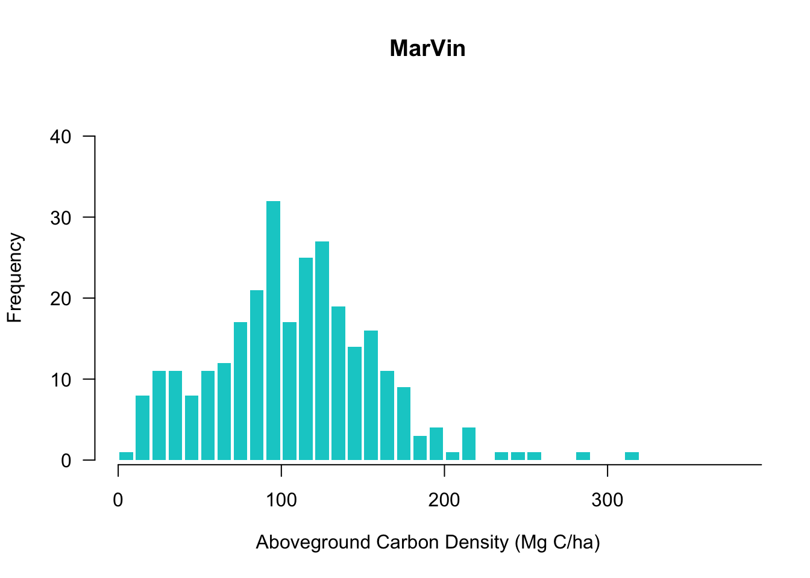
5.5 Error propagation
Here the error from height estimation is different for palms and trees as these were separate models (see above). Best D-H model with less RSE for palms and trees was the log2 method: RSEtree = 5.53 and RSEpalm = 4.2. For individuals with heights directly measured, a ‘RSE’ of 0.5 m was assigned.
The expansion factor from sub-plots is not accounted in error propagation here, therefore this needs further definition. However, here is the code to calculate it using the BIOMASS package:
## PROPAGATING ERRORS ----
# Per plot using RSE
resultMC <- AGBmonteCarlo(
D = INV$DBH, WD = INV$meanWD, errWD = INV$sdWD,
H = INV$height.L2, errH = INV$RSE.H.L2,
Dpropag = "chave2004")
Res <- summaryByPlot(resultMC$AGB_simu, INV$parcela)
Res <- Res[order(Res$AGB), ]
plot(Res$AGB*.48, pch = 20, xlab = "Plots", ylab = "ACD (Mg C/ha)", ylim = c(0, max(Res$Cred_97.5)*.48))
segments(1:nrow(Res), Res$Cred_2.5*.48, 1:nrow(Res), Res$Cred_97.5*.48, col = "red")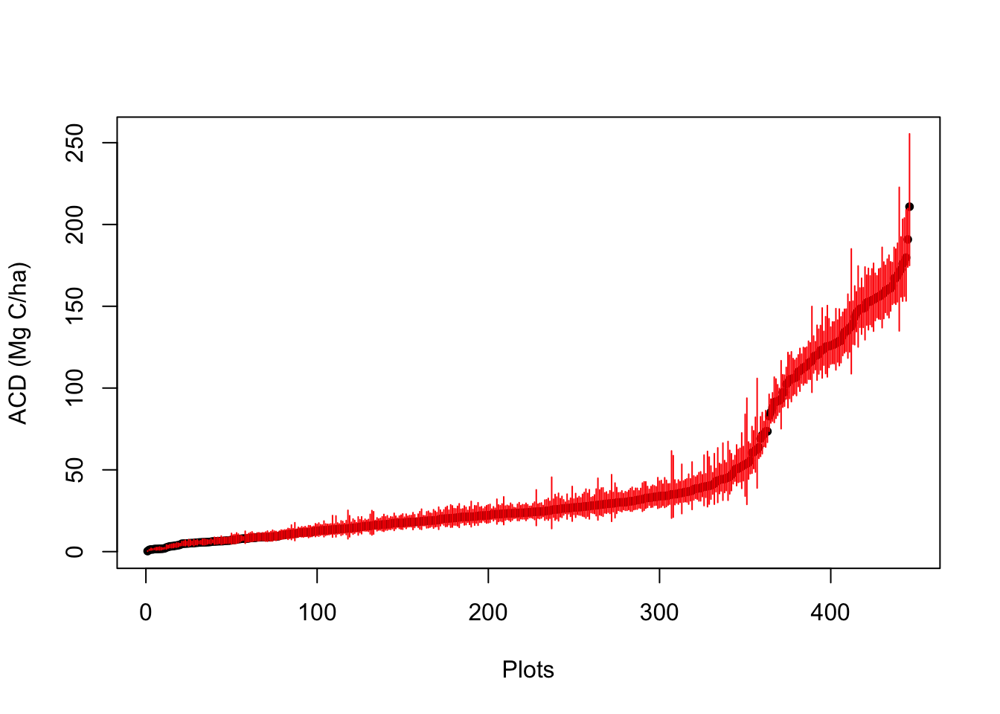
6 Basal Area (plot)
6.1 Formulation
Basal Area (BA) is the area occupied by stems in the plot. Assuming that all trees are circular, basal area for each individual is calculated with the classic formula of diameter-area relation in a circle:
\[ BA_{ind} = \frac{\pi}{4}*DBH^2 \]
Then, the BA of the plot (BAplot) is the aggregation of all individual BA (BAind) divided by the plot area [m2/ha]:
\[ BA_{plot} = \frac{\sum{BA_{ind}}}{area_{plot}}\] Similar to AGB, to adjust the contribution of 10 to 35 cm DBH individuals in proportion of the sub-plot area, an expansion factor was applied to BA.
\[ BA_{plot\space[10,35)} = \beta_{subplot \space [10,35)} * \frac{\sum{BA_{ind\space[10,35)}}}{area_{plot}} \]
\[ \because\space \beta_{subplot \space [10,35)} = \frac{area_{plot}}{area_{subplot \space [10,35)}} \]
\[ BA_{plot\space[10,35)} = \frac{ \sum{BA_{ind\space[10,35)}}} {area_{subplot \space [10,35)}} \]
and, given the contribution of BA from individuals above 35 cm DBH:
\[ BA_{plot\space[35,Inf)} = \frac{\sum{BA_{ind\space[35,Inf)}}}{area_{plot}} \]
total Basal Area for a plot [m2/ha] is:
\[ BA_{plot} = \frac{ \sum{BA_{ind\space[10,35)}}} {area_{subplot \space [10,35)}} + \frac{\sum{BA_{ind\space[35,Inf)}}}{area_{plot}} \]
6.2 BA distribution
All inventories

PaiSus
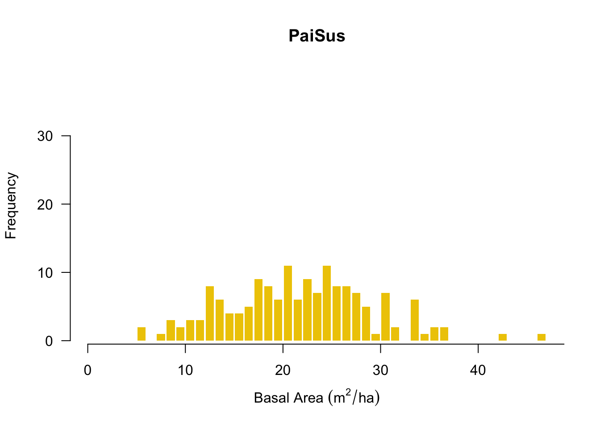
MarVin
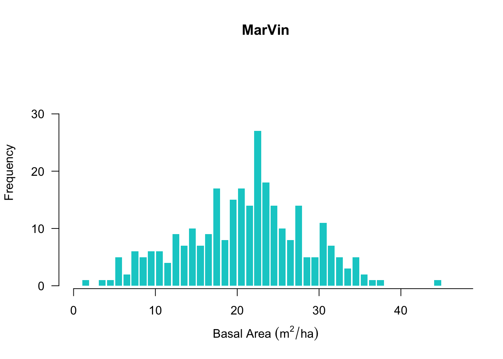
7 Wood Density-ρ (plot)
7.1 Formulation
ρplot is the BA-weighted mean wood density of the plot:
\[ \rho = \frac {\sum {\left(BA_{ind} * WD_{ind} \right) }}{\sum{BA_{ind}}} \]
Again, to account for the adjusted contribution of the 10-35cm DBH sub-plot individuals, I calculated the WD weighted mean separately for the ones with DBH above 35cm (ρ~plot [35,Inf)~) and for 10-35 cm DBH (ρ~subplot [10,35)~). Then I followed two approaches:
- Calculated the mean value of both (i.e., this gives the same weight to both).
\[ \rho_{1} = \frac {\rho_{subplot\space[10,35)} + \rho_{[35,Inf)} }{2} \]
- Calculate a second weighted mean for both ρ, weighting them with their adjusted BA (i.e., the whole plot area for the 35s and the sub-plot area for the 10-35s).
\[ W_{[10,35)} = \beta_{subplot \space [10,35)} * \sum{BA_{ind\space[10,35)}}\]
\[ W_{[35,Inf)} = \sum{BA_{ind\space[35,Inf)}}\]
then,
\[ \rho_{2} = \frac {W_{[10,35)} * \rho_{subplot\space [10,35)} + W_{[35,Inf)} * \rho_{[35,Inf)} }{W_{[10,35)} +W_{[35,Inf)}} \]
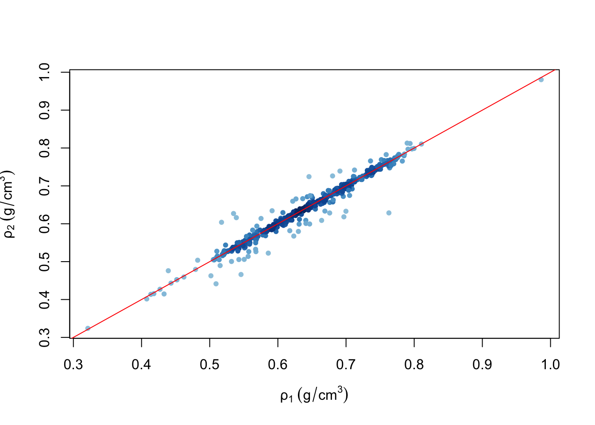
7.2 BA distribution
All inventories
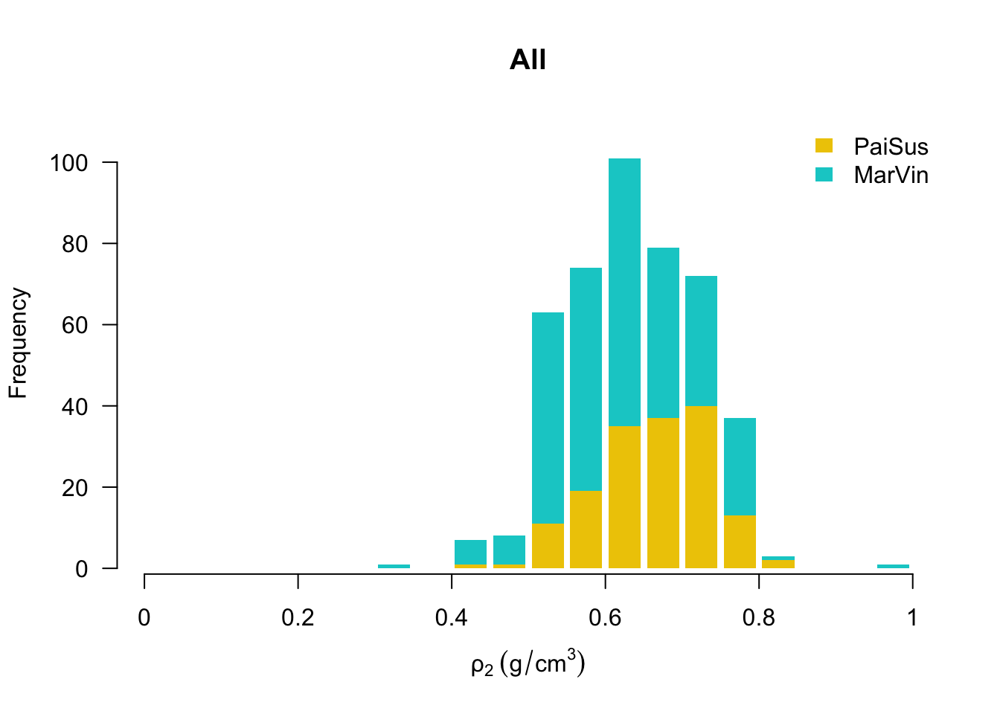
PaiSus
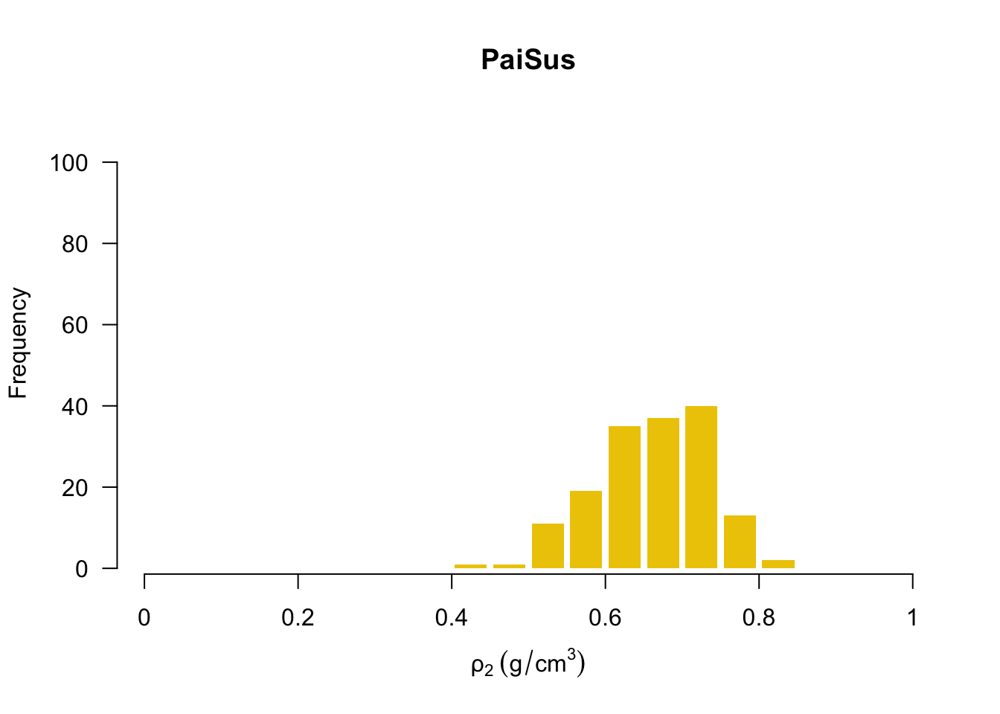
MarVin
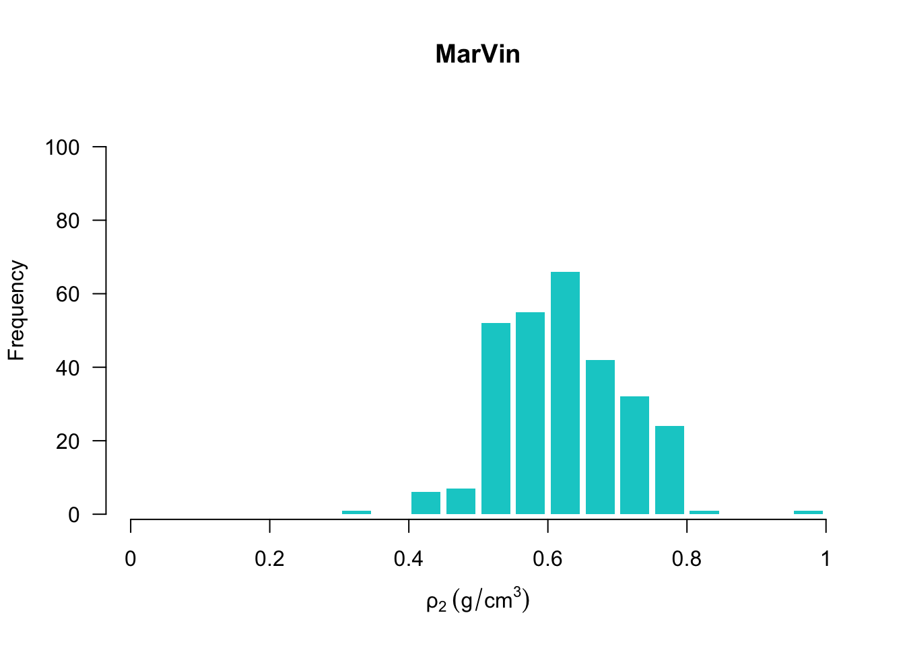
8 ACD-BA-WD relationships
8.1 ACD-BA
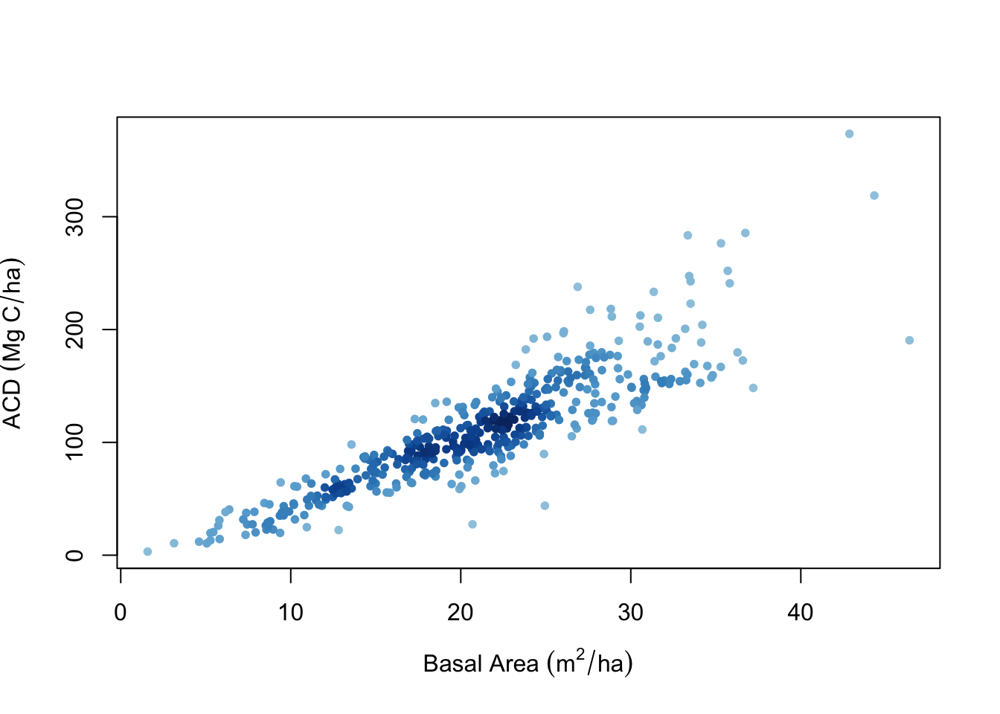
8.2 ACD-WD
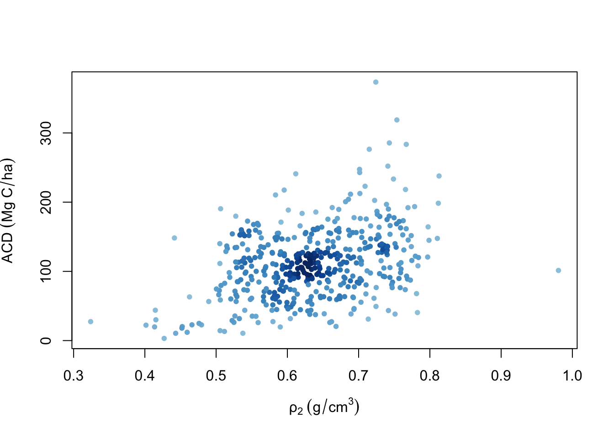
8.3 BA-WD
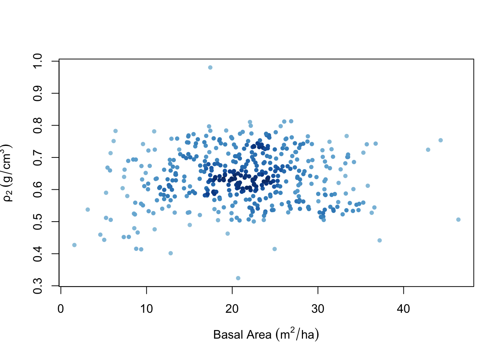